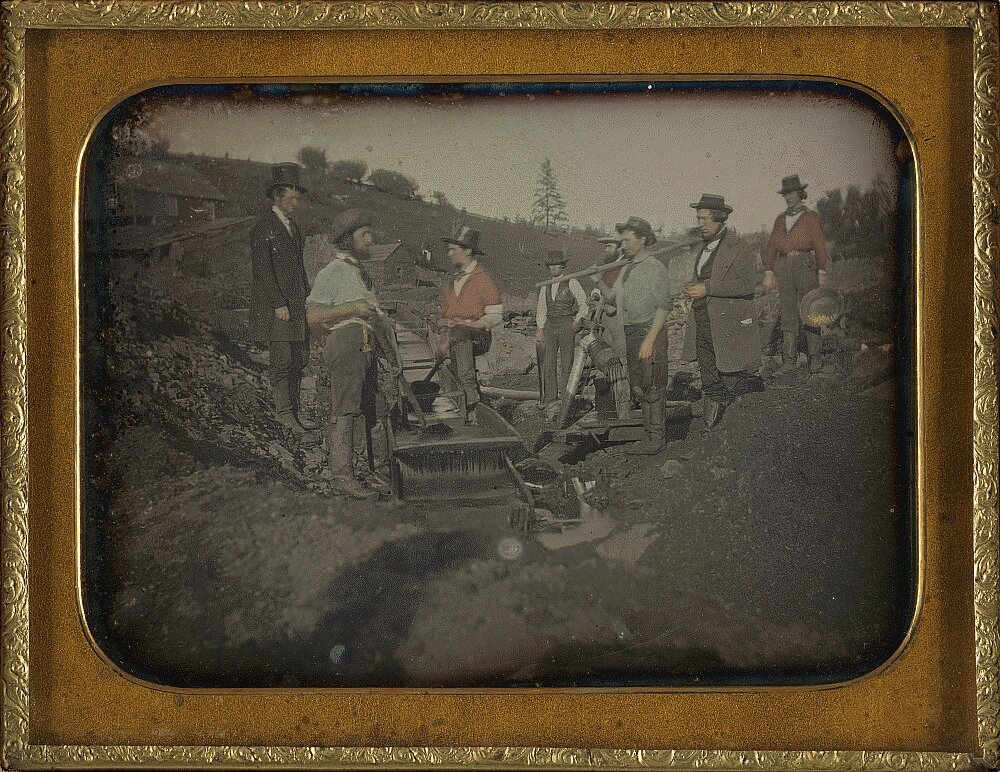

A2 · American History
The California Gold Rush
One man at a river in January 1848, and three hundred thousand people behind him.
Play the audio and follow along, then read it again on your own. Tap or hover over a highlighted word to see what it means.
On 24 January 1848, a carpenter called James Marshall was working at a mill on a river in California. He looked down into the water and saw something shining.
It was gold. Marshall and his boss, John Sutter, tried to keep it secret. They could not. By the summer, men all over California had left their jobs to look for gold.
In December the president of the United States told Congress about the gold, and the news crossed the world. In 1849 about eighty thousand people arrived. People called them the forty-niners.
Getting there was the first problem. Some traveled five months across the continent in wagons. Others went by ship around South America, which took six months.
San Francisco changed almost overnight. In 1848 it was a small town of about a thousand people. Two years later, twenty-five thousand people lived there. Ships stood empty in the bay because the sailors had run away to the gold fields.
Life in the camps was hard. Men stood in cold water all day with a pan, washing stones and sand. Food was extremely expensive, and so were boots, shovels and eggs.

A few people became rich. Most did not. The people who made the most reliable money were the ones who sold things to the miners — food, tools, clothes and transport.
People came from everywhere: Mexico, Chile, China, Ireland, France, Australia. Many of them stayed, and that is one reason California is the state it is today.
But the gold rush was a catastrophe for the Native peoples of California. Miners took their land and their water, brought diseases, and killed thousands of them. The Native population fell by about eighty per cent in twenty years.
In 1850 California became a state. The easy gold was finished in a few years, and by then the real wealth of the place was the land, the farms and the ports.
Key Vocabulary
- a carpenter a person who makes things out of wood
- a mill a building with machines, often next to a river
- to shine to give out light, like the sun or gold in water
- a secret something you do not tell other people
- a wagon a vehicle with four wheels, pulled by animals
- a camp a place where people live for a short time, often in tents
- a pan a flat dish; miners used one to wash gold out of sand
- a miner a person who digs for gold, coal or other things in the ground
- a disease an illness
- wealth a large amount of money or valuable things
The California Gold Rush — A2 · American History · Renan the Teacher, English Language Academy · https://renangrossi.github.io/englishclasses/reading/a2/california-gold-rush.html
Interactive Exercises
Practice
Complete each exercise, then click Submit to see your score and an explanation for every answer.
Speaking & Writing
Discussion
There are no right answers here — use these to practice speaking, or write a short answer to each.
- Would you travel six months by ship for a chance to become rich? Why or why not?
- The sellers made more money than the miners. Can you think of a modern example of the same thing?
- The gold rush was good news for some people and a catastrophe for others. How should a country tell a story like that?